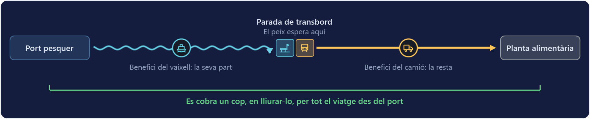

Parades i ordres
On va un vehicle i què hi fa.
Un vehicle visita les parades per ordre i després torna a començar per la primera.
- A cada parada descarrega només el que aquella estació accepta. És llavors quan cobres. Després carrega el que hi hagi esperant.
- La càrrega que no s'accepta es queda a bord, tret que la parada sigui un transbord (a sota).
- Els trens giren cua al final de la línia, de manera que n'hi ha prou amb una línia senzilla d'extrem a extrem.
- Afegeix, treu i reordena parades en qualsevol moment a la finestra del vehicle.
Tria al mapa
- Prem Tria al mapa a la finestra de compra o a la d'un vehicle. La finestra s'aparta.
- Fes clic a les teves estacions, l'una rere l'altra. Cada clic afegeix una parada, i la barra de dalt les va enumerant.
- Desfés treu l'última parada.
- La selecció continua activa fins que prems Fet o Esc.
- Si una estació no et serveix, la nota al costat del ratolí diu per què.
Càrrega completa
Cada parada té una casella Càrrega completa a la finestra del vehicle: el vehicle s'hi espera fins que s'omple. Fes-la servir on surt la càrrega, mai on es lliura.
Transbords
La càrrega pot canviar de vehicle pel camí. Per exemple, peix d'un port pesquer que travessa el mar en vaixell i continua terra endins en camió fins a una planta alimentària:


- Construeix un moll a l'altra riba i una parada just al costat, perquè s'uneixin en una sola estació.
- Dona al vaixell el moll del port i aquesta estació, i marca Transbord a la segona parada (a la finestra de compra o a la del vaixell).
- Compra camions que vagin d'aquesta estació a la planta alimentària.
- En una parada de transbord, el vehicle deixa la càrrega que la parada no accepta. Hi espera els teus altres vehicles, que la carreguen abans que qualsevol altra càrrega d'aquest tipus.
- Els teus vehicles també poden recollir la càrrega de transbord d'una altra de les teves estacions a 3 caselles o menys, mesurades entre les caselles més properes de totes dues estacions. Cerca Estacions properes per al transbord a la finestra de l'estació. Deixa Transbord desactivat a la parada de recollida.
- Es cobra una sola vegada, en lliurar-la, per tot el viatge des d'on es va carregar primer.
- El benefici del primer vehicle mostra la seva part d'aquesta tarifa i el de l'últim la resta, perquè vegis quant guanya cada tram.
- Un vehicle mai no recull la càrrega que ha deixat a la seva pròpia parada de transbord.
Només descarregar, no carregar, passar pel dipòsit
El petit menú al costat de la casella Transbord d'una parada té tres ordres més. El botó mostra una icona per cada una que estigui activa.
- Només descarregar: es descarrega tot. El que l'estació accepta s'entrega i es cobra; la resta es deixa allà com a transbord. No es carrega res.
- No carregar: entrega el que l'estació accepta, però no carrega res, així que el vehicle guarda l'espai per a una parada posterior.
- Passar pel dipòsit: després de la parada, el vehicle passa pel teu dipòsit més proper, sigui on sigui, per a una revisió i qualsevol canvi de càrrega pendent. Els vaixells i els avions passen la revisió a les seves estacions.
- Una parada no pot ser Només descarregar i Càrrega completa alhora, i No carregar es desactiva mentre qualsevol de les dues estigui marcada. En una línia, aquestes ordres valen per a tots els seus vehicles.
Vehicles perduts
Quan un vehicle es perd, un missatge ho avisa: fes-hi clic per obrir el vehicle. Quan se'n perden diversos alhora, el missatge obre Problemes.
Un vehicle que diu Perdut no troba el camí cap a la parada següent. Ho continua provant; arregla la carretera o la via i continuarà.
Una parada amb l'estació enderrocada apareix marcada com a Enderrocat a la finestra del vehicle. Afegeix una altra parada i es traurà de la ruta.
Canviar la càrrega
- Prem Canvia la càrrega al costat de la barra de càrrega a la finestra del vehicle, tria què ha de portar i confirma.
- El vehicle lliura el que porta a la parada següent, no carrega res i va a un dipòsit, on es fa el canvi. Els vaixells i els avions es canvien en aquella mateixa parada.
- Fins que estigui fet pots cancel·lar el canvi i recuperar els diners.
- El vehicle conserva les ordres, l'edat i l'historial.
- Un tren també pot guanyar, perdre o barrejar vagons. Convertir un vagó costa 975 $ i un de nou 6.500 $; un de retirat torna el que encara val.
- Qualsevol altre vehicle paga el 15% del seu preu pel canvi.
- La càrrega a bord que ja no hi cap es perd.
A la finestra del vehicle
| Botó | Què fa |
|---|---|
| Segueix | La càmera segueix el vehicle. |
| Atura | L'atura a l'estació següent; prem un altre cop per posar-lo en marxa. |
| Només trens: li fa fer mitja volta on és i l'envia a una de les seves parades on arribi per aquell costat, o si no a un dipòsit. | |
| Clona | En compra un altre d'igual amb les mateixes ordres. |
| Renova | El canvia per un de nou del mateix model. |
| Ven | Fes clic dues vegades. En recuperes el valor actual. |